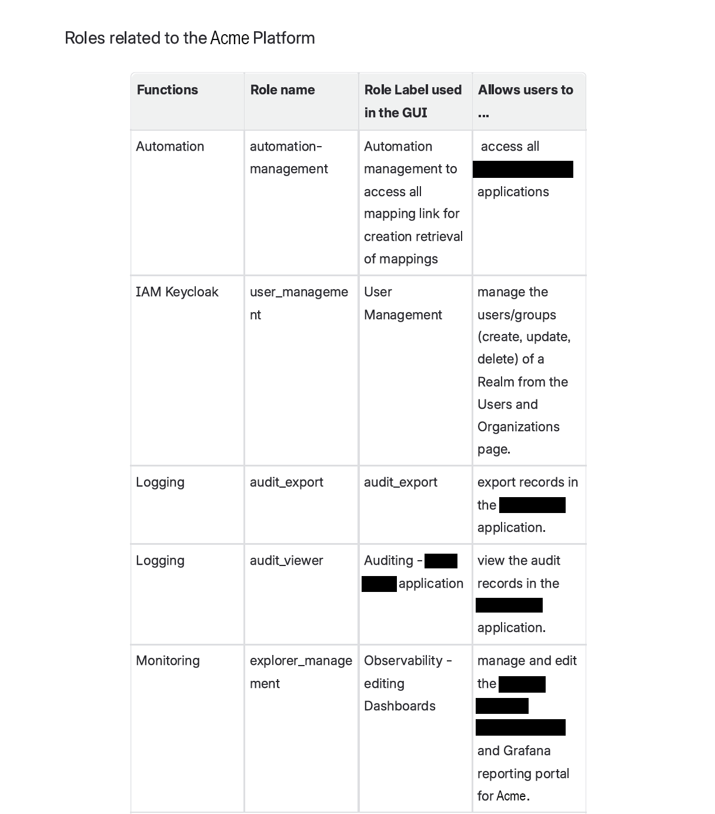
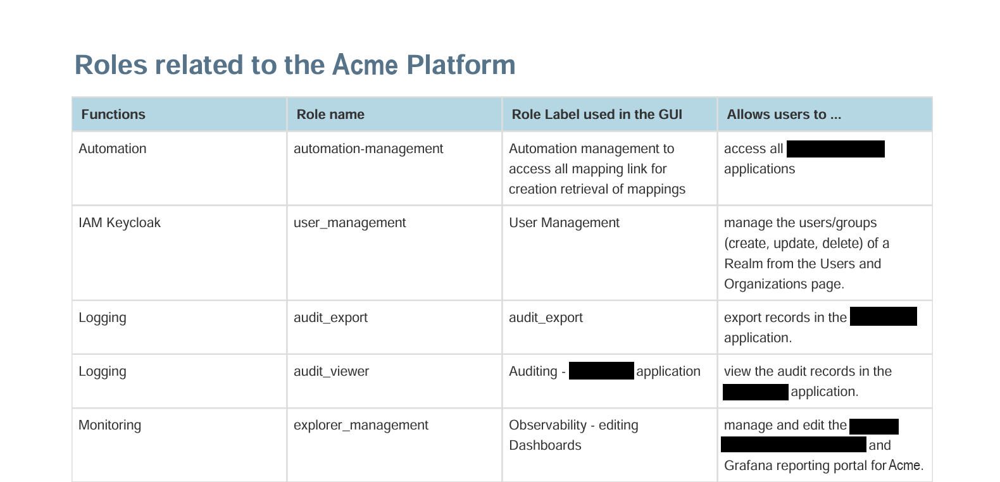
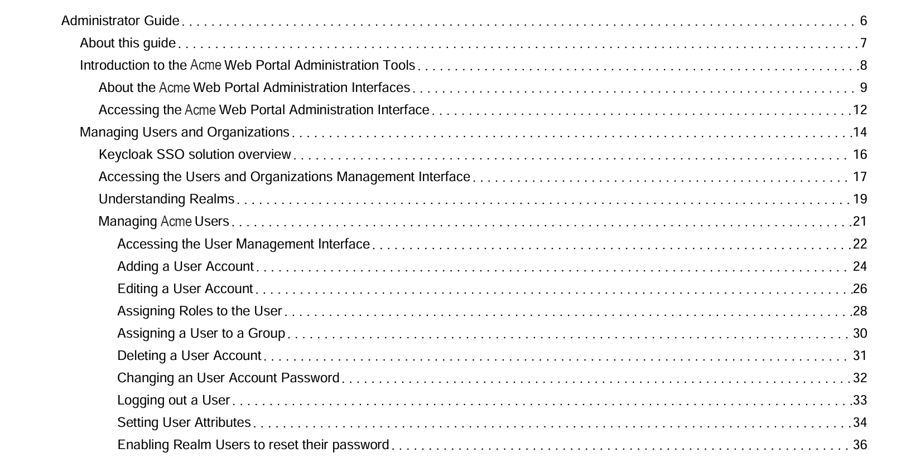
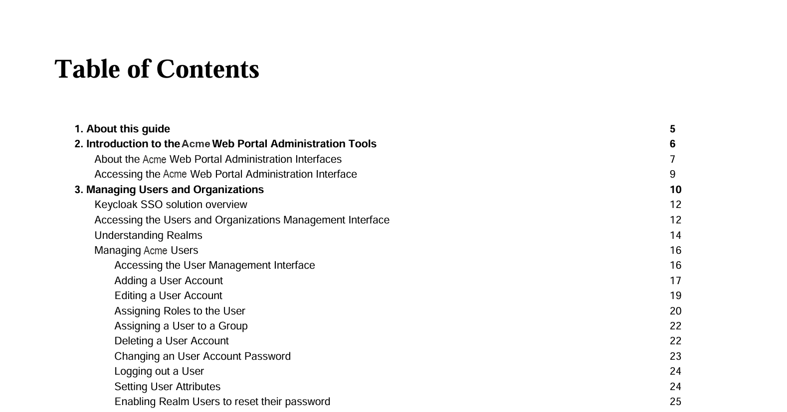

Confluence Cloud doesn't provide a reliable way to export guides as fully formatted, paginated PDFs. Its default export has limited control over page breaks, headers and footers, automatic numbering, and wide tables.
I built a CSS3 Paged Media stylesheet from scratch, 591 lines long, that Confluence applies during PDF export. It gives every guide a paginated table of contents, consistent heading hierarchy, page numbering, and reliable table rendering, without changing how anyone writes content in Confluence.
I designed and wrote the stylesheet independently, with AI assistance in implementing and refining the CSS. I diagnosed the rendering issues myself through testing, research, and trial and error, including problems that only appeared in specific PDF renderers.
Wide tables, especially those with 6+ columns, get clipped on the right edge during PDF export, even with width: 100% applied. I found that Confluence adds an inline pixel width to the <table> element during export. Some PDF renderers give this value priority over the stylesheet, so the fix requires more than a standard CSS override.
/* Wide-table fix: Confluence injects an inline pixel width during PDF export,
which some renderers prioritize over CSS. Constrain the table explicitly
and let cells compress (min-width: 0) to fit within the page. */
table {
width: 100% !important;
max-width: 100% !important;
box-sizing: border-box !important;
table-layout: fixed !important;
overflow-x: visible !important;
border-collapse: collapse;
font-size: 8pt;
page-break-inside: auto;
}
table td, table th {
padding: 5pt 6pt;
border: 1px solid #CCCCCC;
vertical-align: top;
word-wrap: break-word;
overflow-wrap: break-word;
word-break: break-word;
hyphens: auto;
min-width: 0;
font-size: 8pt !important;
}The same 4-column role/permissions table before and after the fix. In the default export, words break awkwardly because the columns are too narrow:


The stylesheet also generates numbered chapters and a paginated table of contents using CSS counters. Chapter numbers update automatically when content is added or reordered, instead of being typed in manually.
/* ==================== HEADING NUMBERING ==================== */
body {
counter-reset: h2;
}
h2:before {
counter-increment: h2;
content: counter(h2) ". ";
}
/* ==================== VERSION NUMBER ====================
Only line to edit per release: update the version string below */
div.toclvl0:before {
content: "Acme 26.1 ";
}The same numbering system applied to the table of contents:


Every guide exported from Confluence now follows the same branded, paginated PDF structure, without requiring manual formatting in the source content. Version updates are also simpler: the release number can be changed in a single line of CSS instead of being updated manually throughout the document.